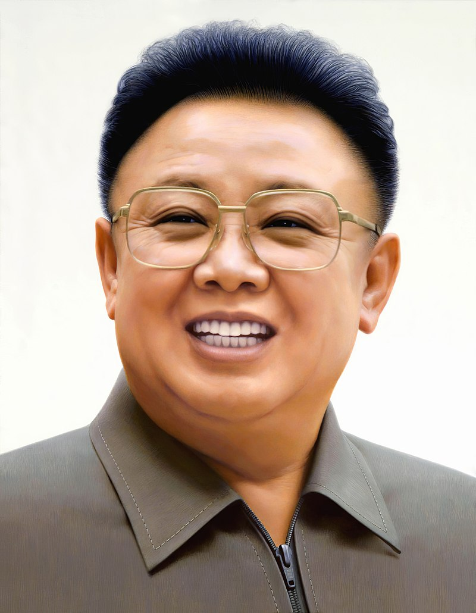
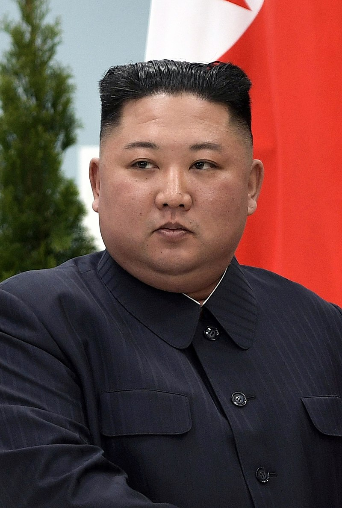

Kim Il-sung married twice and had six children. He met his first wife, Kim Jong-suk, in 1936, marrying her in 1940. She bore sons Kim Jong-il (born 1941 or 1942) and Kim Man-il (born 1944), and daughter Kim Kyong-hui (born 1946) before dying while bearing a stillborn daughter in 1949. Kim Jong-suk was born 24 December 1917 in Hoeryong in (North) Hamgyo’ng Province. Her family and she fled Korea to Yanji, Jilin (Kirin) Province around 1922.[23] In October 1947, Kim Jong-suk presided over the establishment of a school for war orphans in South P’yo’ngan Province, which became the Mangyo’ngdae Revolutionary School. When the school opened in west Pyongyang one year after its foundation, Kim Jong-suk also unveiled the country's first statue to Kim Il-sung. In 1949, Kim Jong-suk was once again pregnant. She continued public activities, but her health diminished. She died on 19 September 1949 due to complications from pregnancy. Kim Il-sung had three children with his second wife, Kim Song-ae: Kim Kyong-il (born 1951), Kim Pyong-il (born 1953), and Kim Yong-il (born 1955).[24] He had two younger brothers, Kim Chol-ju and Kim Yong-ju and a sister.[23] When Kim Il-sung's first wife died, Kim Song-ae was not recognized as Kim Il-sung's wife for several years. Neither partnerships had public weddings.[25] Born Kim So’ng-p’al in the early 1920s in South P’yo’ngan Province, Kim Song-ae began her career as a clerical worker in the Ministry of National Defense where she first met Kim Il-sung in 1948. She was hired to work in his residence as an assistant to Kim Jong-suk. In addition to doing secretarial work for the Kims, she also looked after Kim Jong-il and Kim Kyong-hui. After Kim Jong-suk's 1949 death, Kim Song-ae began managing Kim Il-sung's household and domestic life.[26] In 1953, Kim Song-ae gave birth to her first child with Kim Il-sung, a daughter named Kim Kyong-jin (Kim Kyo’ng-chin). She went on to have at least two other children with him, sons Kim Pyong-il (b. 1954) and Kim Yong-il (b. 1955).[23] Kim Kyong-hui became North Korea's first female four-star general.[11] Her husband Jang Sung-taek was the second most powerful person in Korea before his December 2013 execution for corruption.[12] Their 29-year-old daughter overdosed on sleeping pills in 2006 while in Paris.[27] It has also been reported that Kim Yong-il, who was dispatched to serve in Germany, died from cirrhosis of the liver in 2000.[28]
Kim Jong-il had four partners,[12] and at least five children with three of them.[13] He married his first wife, Hong Il-chon, at the behest of Kim Il-sung in 1966. They had one daughter, Kim Hye-kyung (born 1968), before divorcing in 1969.[29] He later fathered Kim Jong-nam (born 1971) with his first consort, film star Song Hye-rim. Due to Song being a divorcee, Kim concealed the relationship and son from his father.[30] In 1974, Kim Jong-il married his second wife, Kim Young-suk. They had two daughters, Kim Sol-song (born 1974) and Kim Chun-song (born 1976).[23] Kim Jong-il divorced her in 1977, after she lost his personal interest. In 1980, Kim Jong-il married his third wife, Ko Yong-hui. Ko was the de facto First Lady of North Korea from Kim Jong-il’s becoming of leader in 1994 until her death in 2004. The couple had two sons, Kim Jong-chul (born 1981) and Kim Jong-un (born 1982 or 1983), and one daughter, Kim Yo-jong (born 1987).[24] After Ko Yong-hui’s death, Kim Jong-il was married to his personal secretary, Kim Ok.[12] The two were married until Kim Jong-il’s death, and did not have any children. The two half-brothers Kim Jong-un and Kim Jong-nam never met, because of the ancient practice of raising potential successors separately.[31][32] From the early 1980s onward, Kim Jong-il dichotomized the Kim Family between its main, or central, branch (won kaji) and its side, or extraneous, branch (kyot kaji). The main branch referred to Kim Il-sung’s family with Kim Jong-suk and publicly included Kim Jong-il and Kim Kyong-hui. The side branch referred to Kim Il-sung’s family with Kim Sung-ae and included the three children from their marriage.[23] Kim Jong-un's two older brothers were considered "black sheep" of the family.[27] Kim Jong-nam likely fell out of favor due to advocating for reform in the government.[33] He had a reputation as a troublemaker within the family,[3] and publicly stated in 2011 that North Korea should transition out of his family's rule.[27] On 14 February 2017, Kim Jong-nam was assassinated with the chemical nerve agent VX at Kuala Lumpur International Airport in Malaysia.[34][35] Two women, one Indonesian and one Vietnamese, smeared the agent on Kim Jong-nam's face; both women were released after it was determined that they had been tricked by North Korean operatives, who had told them that the act was a prank for a Japanese comedy program and that the substance was lotion.[36][37] Four North Koreans fled Malaysia on the day of the murder.[36] Kim Jong-nam was survived by his wife and two children. His son, Kim Han-sol, has also criticized the regime. In an interview with Finnish media in 2012, Kim Han-sol openly criticized the reclusive regime and the government saying that he has always dreamed that one day he would return to his homeland to "make things better". Ever since the death of his father, his whereabouts have been unknown.[38] It was later revealed in 2019 that Jong-nam was a CIA informant prior to his assassination[39] The middle son, Kim Jong-chul, was reportedly not considered in succession considerations due to his unmasculine characteristics.[27] He is also known to be reserved.[3]
Kim Jong-un became North Korea's Supreme Leader on 29 December 2011.[24] He married Ri Sol-ju in either 2009 or 2010, and the couple reportedly had a daughter, Kim Ju-ae, in 2012.[12] His sister Kim Yo-jong had fallen out of favor with her brother for a few years but in 2017, she was elevated by Kim Jong-un to the powerful Central Committee of the Workers' Party of Korea. Kim Jong-un made an effort to distinguish himself from the reputations of his father and brothers, and has promoted the image of an academic who possesses a masculine and extroverted demeanor.[3] In April 2020, a three-week absence from public view led to speculation that Kim was seriously ill or dead, but no clear evidence of any health problem came to light.[40][41] He continued to appear in public rarely over the following months, possibly because of health problems or the risk of COVID-19.[42] In August, it was reported that Kim had ceded a degree of authority to his sister, Kim Yo-jong, giving her responsibility for relations with South Korea and the United States and making her his de facto second-in-command.[43]
This information has been coped from Wikipedia